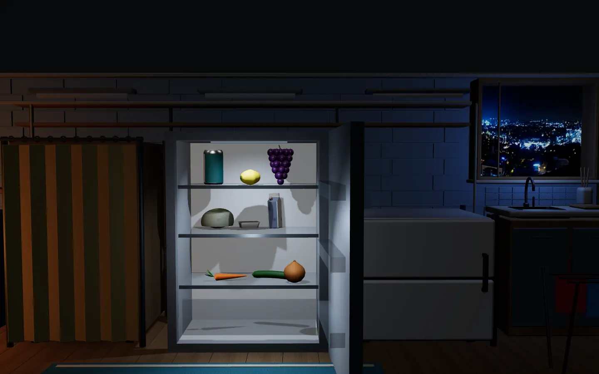
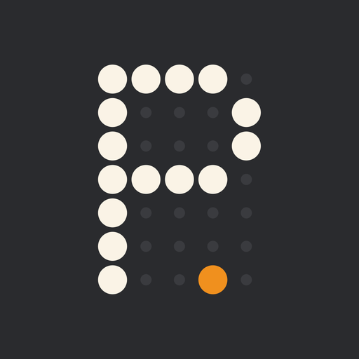
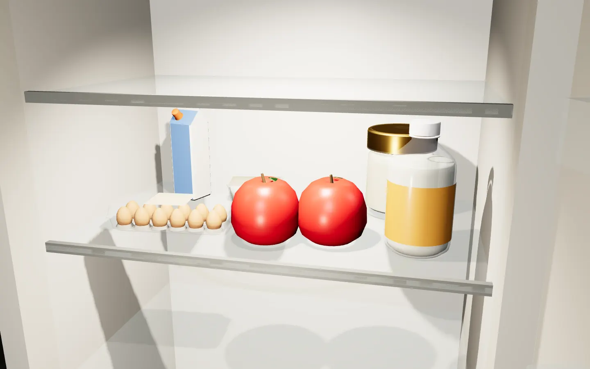
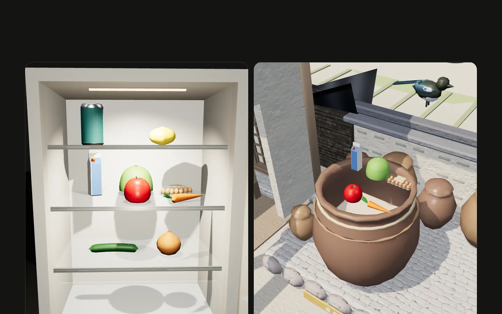

언어
한국어
English
日本語
Español
Deutsch
Français
ไทย
Русский
Монгол
Tiếng Việt


Pantrip
냉장고 안쪽,
잊혀진 것들.
10.14

찰칵, 끝.

내 냉장고 그대로, 손 안의 주방에.
우리 집 냉장고
Pantrip 주방
출발
오늘은 어느 주방으로?
목적지
등급
하나씩, 제자리에.
상품
장식
Pantrip
탑승권
컬렉션
유효 기간
포함